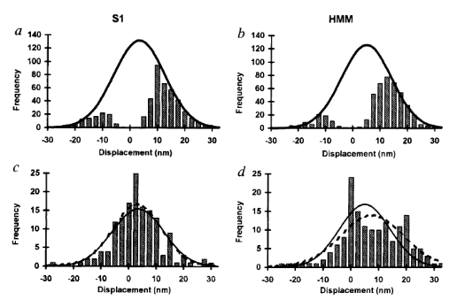

2 Literature Review
This review is aimed to be a comprehensive examination of the literature with a scope highly focused on the aspects most fundamental to the main question addressed by this dissertation (what is the relative timing of the powerstroke and Pi-release from myosin?). The review will begin by briefly covering myosin structure and move specifically into how Pi is released from the active site and how lever arm rotation occurs before discussing the evidence in-support of both the Powerstoke First and Pi-Release First models. Additionally, methodological limitations will be addressed here as this may/may not confound the conclusions drawn from a report. Lastly, an evaluation of common analysis techniques of single myosin molecule laser trap will be given including an emphasis on the lack-of availability of user friendly software.
2.1 Myosin Structure
Myosin is a motor protein that accomplishes a wide variety of cellular tasks that includes both muscle contraction (myosin II) and intracellular cargo transport (myosin V). In fact, the myosin (super) family is quite large and has >100 different myosin isoforms (Hodge, Jamie, and Cope 2000) that have traditionally been classified into >30 different structural classes. However, more recently there has been an effort to more quantitatively classify myosins into four groups based on mechanic and kinetic parameters. This grouping schema classifies a myosin as either a 1) fast mover, 2) slow/efficient force holder, 3) strain sensor, and 4) gate (Bloemink and Geeves 2011). Despite a large diversity of job that each myosin performs, they all are mechanochemical enzymes with conserved structures which allows them to transduce the chemical energy of ATP into a mechanical force imposed onto an actin filament. The conserved structures in the myosin motor domain contains 3 distinct sites which interact together allowing the enzymatic (biochemical) and mechanical function of the whole protein to occur. The sites are the 1) active site, 2) the actin binding surface, and 3) the lever arm (Robert-Paganin et al. 2020). Structural changes that occur at both the actin binding surface and in the active site ultimately are communicated throughout the entire protein which effects the position of the lever arm.
Myosin Structure from Robert-Paganin 2020. The three main conserved sites are highlighted in red boxes. ATP is shown in a dashed circle.
2.1.1 How does Pi leave the active site?
When binding to myosin, an ATP molecule enters the active site “γ-phosphate first.” The implications of this is that when ATP is hydrolyzed to ADP + Pi , the ADP molecule blocks the Pi exit pathway the way that ATP entered. Counterintuitively, Pi-release occurs first prior to the release of ADP in myosin’s cross-bridge cycle (Geeves, Goody, and Gutfreund 1984). But, how does Pi leave the active site if ADP is blocking the exit? There are three proposed pathways that lead into myosin’s active site and they are nicknamed the “front door,” “back door,” and “side door.” The position of ATP in the active site was first observed when myosin’s crystal structure was first resolved (Rayment et al. 1993). At this time solution kinetic studies had established the timing of some of the biochemical steps and was clear that the Pi-release step occurred before the release of ADP. With the observation of ATP in the active site “γ-phosphate first” it became clear that Pi could not leave the same way it originally entered (via the “front door”) due to steric blocking by ADP. With this data the hypothesis was made that myosin could be a “back door” enzyme in which Pi could escape through the 50-kDa cleft (Gilson et al. 1994; Rayment et al. 1993; Yount, Lawson, and Rayment 1995). Additionally, over time other hypotheses arose most prominently with the idea of Pi leaving through a “side door” which forms from an opening in between SWII and the P-loop from the active site. To date, the most probable Pi-release pathway is via the “back door” and is thoroughly detailed by Llinas et al. (2015). Using x-ray crystallography, myosin-VI, varying levels of [Pi] concentrations, and numerous active site point mutations they characterized a so-called “Pi-release tunnel” in between the cleft of the two 50-kDa domains that lead from the active site into solution. In short, the mechanism of Pi-release involves actin binding triggering conformational changes in the active site. SWII opens the entrance to the Pi-release tunnel in which the Pi can dissociate from the active site into solution. Additionally, they were able to couple their structural observations with kinetic solutions studies to show the higher probability of the “back door” mechanism versus the alternate “side door” hypothesis.

Figure 2.1: The so-called ‘Pi-release tunnel’ detailed by X-Ray Crystallography from Llinas et al. 2015.
2.1.2 How does the powerstroke occur?
Unfortunately, there are no structures of the transition states that occur throughout the cross-bridge cycle and thus there is limited knowledge of the structural re-arrangements that occur during the main part of the powerstroke (the force generating step), however what is known is that there is a large lever arm rotation between the initial force bearing PiR state and the strongly bound ADP state that is coupled with cleft closure (Sweeney, Houdusse, and Robert-Paganin 2020). Structural data has however provided information about the size of the lever arm, ~9nm in chicken skeletal S1 (Rayment et al. 1993), which is in close proximity with single molecule displacement records measured in the laser trap, 5-10nm, for skeletal myosins containing two IQ domains Tanaka et al. (1998). In addition, the displacement of the powerstroke scales with the length of the lever arm which is dependent on the number of IQ domains (Matthew J. Tyska and Warshaw 2002). In comparison, myosin V S1 that contains 6 IQ domains was measured to have an average displacement ~18 nm (Veigel et al. 2002). Interestingly, the displacement of myosin V S1 is about three times larger than that of myosin II S1 as myosin V S1 also contains three times the number of IQ domains.

Overlayed structures of myosin V in the pre-powerstroke and rigor state from Wulf 2015
Along with the length measurements, estimations of the degrees of rotation of the lever arm have been made. Several groups have estimated a large 65-75 degree rotation of the lever arm which occurs as result of the powerstroke (Dominguez et al. 1998; Houdusse, Szent-Györgyi, and Cohen 2000; Walker et al. 2000). Admittedly, though the estimations of the displacement caused by the powerstroke are rather close between measurements of the lever arm from structural biologists and displacement records provided by single molecule trappers, there has been speculation on why the displacement measured in the laser trap is often a few nanometers less than predicted by a 9nm lever arm rotating through 70 degrees of motion (this should be >9nm based of structural predictions though many trappers report 5-6nm). Matthew J. Tyska and Warshaw (2002) attribute the underestimation from trapping studies to the fact that myosin is working against a load in the laser trap. Alternatively, there could also be series compliance that effects the functionally measured displacement in the trap. Furthermore, one of the most notable and important features of the myosin motor domain is the converter. The converter is able to amplify small conformational changes that occur at the actin binding interface and the active site into large movements and re-positioning of the lever arm. The converter is highly flexible and the majority of the series compliance in the myosin has been attributed to this feature (Köhler et al. 2002). Though the lever arm has been suggested to be compliant by some (Howard and Spudich 1996), more recent evidence suggest the lever arm is in fact rigid (Warshaw et al. 2000) since the observation that showed myosins displacement is directly proportional to lever arm length (Matthew J. Tyska and Warshaw 2002). Interestingly, the powerstroke actually occurs in two transitions, the fast powerstroke and the second powerstroke (sometimes referred to as the hitch). The additional lever arm rotation is accompanied by complete closure of the actin binding cleft that is coupled with the release of ADP from the active site (Mentes et al. 2018; Sweeney, Houdusse, and Robert-Paganin 2020). While, the second powerstroke does not contribute much to the development of force, it is crucial to the maintenance of force. Changing the rate at which ADP is released from the active site can drastically alter myosin’s duty ratio and is highly load dependent. In fact, kinetic differences, including differing ADP release rates, is what make different myosins ideal at performing specific tasks. Through their kinetics myosins as are essentially “tuned” to their biological function. While skeletal muscle myosin II has a low duty ratio (~5%) which makes it ideal for the development of high forces and velocities, myosin V has a much higher duty ratio which allows for one head to always be strongly bound to an actin filament track ensuring the molecule does not simply diffuse off of its actin track.
Additional lever arm rotation with ADP Release from Wulf 2015
Lastly, the key activator of the myosin powerstroke that is universally agreed upon is actin binding. Really, to try and explain what happens after actin binding would be jumping too far into the major debate happening in the field and is exactly the motivation behind this dissertation. Up until now, what is fairly certainly known (and what is actually generally agreed upon) is that the powerstroke is 1) actin-activated and 2) occurs between an initial force bearing state and the strongly bound ADP state. The details and order of events that occur has been debated for years and the answer to the question “how does the powerstroke occur?” is highly dependent on who is asked. Two distinct and opposing answers are provided by structural biology and the results of functional experiments.
2.2 The Debate
The relative timing of the powerstroke and Pi-release is the big question in the myosin world. This question has been tested and re-tested and evidence continues to build for each side. The perspective from structural biologists holds the view that Pi-release gates the powerstroke and they have the data to back it up. However, functional assays performed by muscle physiologists, biochemists, and biophysists support the idea that the powerstroke occurs prior to Pi-release and that actin-binding alone is enough to trigger the powerstroke, and they have the data to back it up.
2.2.1 Evidence for the Powerstroke Preceding Pi-release
In a model where myosin’s powerstroke occurs before Pi-release there must be a couple of key functional observations that can be observed experimentally in order to support this theory. 1) The development of force or the rate of the powerstroke should be relatively faster than the measured Pi-release rate. 2) The powerstroke should be reversible and/or force production should be vulnerable to Pi rebinding as this should either reset the myosin to an Mpre-D-P state and/or induce premature detachment. Early studies with muscle fibers show isometric tension is inversely proportional to [Pi] - the higher the [Pi] in solution, the lower the force (Brandt et al. 1982). Additionally, the release of caged Pi in isometrically contracting muscle fibers displays a delayed but clear depression in tension (Dantzig et al. 1992). Furthermore, a linked assay that assesses the development of muscle fiber force and the simultaneous appearance of Pi in solution proves that fiber force develops faster than the appearance of Pi in solution (He et al. 1997). Later studies show that the rate of force production following a shortening-restretch protocol is rapid and similar to the original time course of the force development from isometric tension (Sleep, Irving, and Burton 2005). These cellular level studies are clear that a muscle can produce force faster than the release of Pi and that the force developed by a muscle can be affected by Pi rebinding, all in support of a model where the powerstroke occurs before Pi-release. More recently, in vitro investigations using time resolved FRET with fast skeletal myosin II provided direct evidence that the powerstroke proceeds Pi-release by obtaining fluorescence measurements of both the rate of the powerstroke and Pi-release for direct comparison. The rate of Pi-release was measured at 30-40 s-1 and the adoption of a post-powerstroke configuration (i.e. M* Mole Fraction) occurred at 350 s-1 (Muretta et al. 2015). Thus, when directly measured the rate of transition from pre-post powerstroke is far greater than the rate of the appearance of Pi in solution. This finding was corroborated with traditional FRET studies of myosin-V comparing lever arm rotation rate to another independently acquired Pi-release rate (Trivedi et al. 2015). Lastly, ultra-fast optical trapping can directly measure the rate of the powerstroke from a single molecule of myosin (Marco Capitanio et al. 2012). Woody et al. (2019) measured the rate of the powerstroke under varying [Pi] concentrations and saw rapid displacements occurring within ~200us of actin binding and that the dwell time prior to the displacement was unaffected by [Pi]. Even so, by using an ensemble averaging technique they show direct observation of powerstroke reversals (under high loads and high [Pi]) which provides single molecule evidence of the powerstroke proceeding Pi-release.
2.2.2 Evidence for Pi-release Gating the Powerstroke
If Pi-release gates the powerstroke, distinct structural conformations of myosin should exist in order to support this model. 1) When Pi is in the active site myosin should be in a pre-powerstroke position and 2) the adoption of a post-powerstroke configuration should only occur if Pi is absent from the active site. Interestingly, the hypothesis that the biochemical release of Pi from myosin’s active site proceeding the powerstroke originally came as a result of first x-ray crystallization of myosin (Rayment et al. 1993) and the subsequent attempts to dock an ATP molecule into the crystal structure since the original myosin structure was crystallized without a ligand. The realization occurred after these efforts that myosin may perhaps be a “back door” enzyme (Yount, Lawson, and Rayment 1995). By extending the “back door” analogy, Yount, Lawson, and Rayment (1995) described Pi as behaving as a “door stop” as it was hypothesized that Pi itself actually prevented the powerstroke from occurring since the Pi appeared to be in a position that would prevent cleft closure (and the subsequent triggering of structural changes necessary for lever arm rotation). Indeed, for over a decade from the original structural characterization of myosin there persisted discrepancies amongst multiple hypotheses about how actin binding could possibly cause the conformational changes necessary in the active site to open the back door (Sweeney and Houdusse 2010). The two possibilities being that either SWI can create the opening for the back door whilst remaining coordinated with the ADP or SWII must somehow open the back door without permitting lever arm rotation. Llinas et al. (2015) provided new myosin x-ray crystallography structures in which they show the ability of SWII to move ~4A from its position in the pre-powerstroke position, opening the back door escape route without substantial movement of the lever arm. This new state was aptly named the Pi-release state, PiR. By using a Pi-soaking protocol followed by rapid freezing and subsequent crystallization, Llinas et al. (2015) demonstrated that Pi can translocate back through the Pi-release tunnel as they observed two distinct structural states in response to the rapid freezing after Pi-soaking. Pi was either at the exit of the Pi-release tunnel (PiR1) or translocated back through the tunnel near the ADP (PiR2). Only in response to a delayed freezing after Pi-soaking did they observe Pi completely rebinding the active site, consequently reforming the pre-powerstroke state. Thus, they provide strong evidence for Pi-release occurring before the powerstroke - when Pi is in the active site, myosin is in the pre-powerstroke state. Furthermore, when Pi-soaking post-powerstroke myosin in an ADP state, the crystal structures show that the Pi was not able to translocate back through the Pi-release tunnel to the active site. This demonstrated that myosin only adopts a post-powerstroke conformation when Pi is absent from the active site and also that Pi-rebinding can only occur prior to the powerstroke (Llinas et al. 2015). These observations are all consistent with a model in which Pi-release gates the powerstroke.
2.3 Methodological Limitations
As the brief review provided by the previous two sections highlights, there is overwhelmingly strong evidence supporting both models that describe the relative timing of the Pi-release and the powerstroke. Because of this, careful consideration about the methodical and analytical limitations should be understood if there will be any hopes of somehow reconciling the differences observed in the data. To start, the most obvious difference that is evident amongst the data is that the majority of the studies that support the powerstroke first model are all functional assays, whereas the evidence supporting the Pi gating model are largely structural. In essence, structural data provides “snapshots” analogous to the creation of a stop motion film, whereas the functional studies provide the soundtrack to the movie. We have the two essential pieces to creation of a blockbuster film, but not the information to correctly align the audio to the video. Understanding every detail of these experiments is difficult as the collection methods and analytical techniques for each respective method are the results of multidisciplinary approaches that provide deep knowledge of biology, chemistry, physics, mathematics, and computer science. However, new information can be revealed when the data is put into context of understanding what a measurement is precisely assessing from a given experiment and what factors should be considered when weighing the values in combination in the efforts to generate any given model.
2.3.1 Structural limitations
For example, while the results of x-ray crystallography produce a single structure of a myosin molecule these structures in fact represent the average bias of thousands of molecules (Sweeney and Houdusse 2010). In addition, formation of myosin crystals is extremely difficult and numerous modifications have to be performed on the myosin (i.e. reductive methylation, removal of the heterogeneity in light chain species and varying levels of phosphorylation) to obtain high quality crystals (Rayment et al. 1993). Furthermore, an actin-bound myosin structure is yet to be resolved. Considering the strong evidence that the cross-bridge cycle is actin activated (i.e. accelerated powerstroke and Pi-release rates in the presence of actin (Lymn 1974)), this is an important limitation to be considered (and perhaps the biggest). Lastly, myosin’s kinetics are influenced by many factors including load, pH, ionic strength, and [Pi]. It is not currently possible to variably apply loads (besides those arise from crystal packing forces) to myosin in x-ray crystallography or electron-microscopy and the solution buffers often have fixed pH and salt concentrations that optimize the formation of crystals and that are not necessarily preferential for myosin’s kinetics.
2.3.2 Functional limitations & the “unifying” hypothesis
Now, the functional assays are not without faults of their own. To start, muscle fiber studies, ATPase, stopped-flow, and FRET are all bulk assays. These assays are measuring the average response of thousands of molecules of myosin into a single measurement of the development in tension, powerstroke rate, or Pi-release rate. Even optical trapping measurements of the powerstroke rate from a single molecule of myosin is not as straightforward as it might sound (ask me how I know) and involves an ensemble averaging technique (Blackwell et al. 2021; M. Capitanio et al. 2006; Sellers and Veigel 2010; Veigel et al. 1999, 2003). Moreover, in the trap single molecule displacements are the summation of the distance produced by myosin’s powerstroke and that of brownian capture (additional distance caused by thermal noise) and the transition rate going from a pre- to post-powerstroke (i.e. unbound to bound) in the trap is limited by the viscous drag forces imposed by the solution onto the trapping beads (König 2000; Svoboda and Block 1994). As a result, the rate of the powerstroke is often underestimated due to imperfect alignment of single molecule events in the ensemble averages and also in part to the transition rate between unbound/bound periods being similar to the trapping system’s corner frequency. In the case of the coupled assays where attempts are made to simultaneously measure the rate of force development in fibers while also recording the Pi-release rate, assessments must be made about the relative time resolution between the two coupled measurements to assure there is a fair comparison between the two respective rates. To this regard comes one of the biggest flaws within the powerstroke first argument. The most current argument put forward by structural biologists who support a Pi-gating model claim that the Pi-release rate measured by muscle fibers and with stopped flow is simply the wrong rate. When Llinas et al. (2015) provided new structural evidence of the PiR state, they also hypothesized the structural sequence of Pi being released: 1) Pre-powerstroke state (Pi in active site), 2) PiR2 (Pi transitions from active site into putative Pi-release tunnel, and 3) PiR1 (Pi at exit of Pi-release tunnel in solution). A phosphate binding protein binds Pi in solution with the equivalent structural state being PiR1 or later. Moreover, the structural biologists argue that the Pi transitioning from the active site in the pre-powerstroke state to the PiR2 state is what actually gates the powerstroke - not the transition into the PiR1 state - and that the PPS-PiR2 transition would occur very rapidly. This was proposed to provide a unifying theory between the structural and functional assays that bridges the gap between the powerstroke first and Pi-gating models. However, this hypothesis remains to be rigorously tested and provides a testable hypothesis - If the transition of Pi from the active site into the PiR2 position gates the powerstroke, then can the powerstroke be prevented by occupying the active site with Pi?
2.4 The S217A mutation in myosin V
Several key amino acids in the active site have been identified to interact with the ATP and more specifically, the γ-phosphate while in the active site (Forgacs et al. 2009; Gulick et al. 2000; Llinas et al. 2015; C. A. Smith and Rayment 1996). Moreover, previous simulations of Pi leaving the active site via the different proposed escape routes highlight important contacts between certain amino acid residues with this fleeting Pi along each proposed route (Cecchini, Alexeev, and Karplus 2010; Reubold et al. 2003). By manipulating the charge or size of these amino acids along the different escape routes with point mutations several research groups have tested whether they could slow the measured release of Pi with a stopped flow assay (Forgacs et al. 2009; Llinas et al. 2015). Serine 217 (S217) was shown to make contact with the γ-phosphate in the active site from its location on SWI and the S217A mutation drastically reduced the Pi-release rate ~10-fold (Forgacs et al. 2009). With this mutation, S217 was identified as playing an important role in Pi-release. Llinas et al. (2015) verified that the S217A mutation drastically slows Pi-release and in addition showed S217 mediates the transition of the Pi from the active site into the “Pi-release tunnel” via the back door mechanism with x-ray crystallography. Furthermore, the underlying mechanism of the S217A mutation that slows Pi-release was suggested to be due to the mutation preventing the Pi from transitioning into the Pi-release tunnel via the back door escape route, possible due to a steric blocking by a water molecule or loss of interaction that “guides” the Pi into the release tunnel (Forgacs et al. 2009). Comparatively, the E146A mutation proposed to contact the γ-phosphate via the alternative side door mechanism (via a SWI movement) had no effect on the Pi release rate (Cecchini, Alexeev, and Karplus 2010; Llinas et al. 2015) which was an observations that led to them supporting the back door mechanism which is currently the prevailing Pi-release pathway hypothesis (Robert-Paganin et al. 2020). Most importantly the S217A mutation provides the perfect test of the “unifying” theory proposed by the structural biologists. The unifying theory states that the transition from the active site into the Pi-release tunnel gates the powerstroke (not the release into solution). With the S217A mutation, we have a mutation that prevents the release of Pi from the active site into the Pi-release tunnel. So, if the release of Pi from the active site into the escape tunnel does gate the powerstroke then the powerstroke should be delayed or prevented with the S217A mutation in myosin V. Furthermore, since the Pi-release rate becomes so much slower (~30/s) the observation of a delayed stroke would be obvious in a standard three-bead laser trap assay which has millisecond resolution. Additionally, myosin V has a much slower and rate limiting ADP-release rate which results in an increased attachment time when compared to fast skeletal myosin II making the attachment events in the laser trap more easily identifiable at high ATP concentrations.
2.5 Analysis of single molecule trap data
“…the interpretation of data from such experiments the laser trap is not straightforward” - Guilford et al. 1997
The laser trap (or optical tweezers) has been revolutionary to the myosin world. Originally developed by Arthur Ashkin of Bell Laboratories (Ashkin et al. 1986) the laser trap was adopted by biologists to study the interactions of a single molecule of myosin with a single actin filament. After the first single molecule three-bead assay was performed in 1994 by Finer, Simmons, and Spudich (Finer, Simmons, and Spudich 1994), single molecule myosin biophysics began to flourish as other research groups began building their own laser traps to investigate the basic mechanical and kinetic properties of the myosin family. While quick to adopt the method of the three-bead assay, the analysis of single molecule laser trap data seemed to be controversial even since the original Finer, Simmons, and Spudich (1994) experiment. Most of the major research groups that were trapping with myosin in the 1990s seemed to have their own opinions on how to best extract the necessary information from their raw data records and several analysis methods seemed popular while other were abandoned or seemingly ostracized by the community. Even the original work of Finer, Simmons, and Spudich (1994) came under scrutiny relatively quickly by the newly found field since they analyzed their data “by eye,” manually selecting where actomyosin interactions occurred in the data. Moreover, even more recently as analysis has moved more hands-off and has become increasingly more automated with computer programs, many fail to cite properly (or even explain) the basic underlying programming languages, software, or libraries used to construct their custom analysis scripts (and there is currently no GUI software that is easily accessible to perform the analysis of laser trap data). This makes reproducible research quite difficult, and not just from the point of wanting to replicate someone else’s experiments, but also since many reviewers of journal manuscripts expect to see laser trap data analyzed just as “someone else” has done. The lack of software is a large gap in the field and ultimately provides a hindrance to the field progressing as a whole. Following is a review, attempted at being chronological as best as possible, of the (mostly early) trapping papers and their techniques used to analysis single molecule myosin data from the three-bead laser trap. The purpose is to review what has and is currently being done to analyze single molecule trapping data in hopes highlight the “best practices” that should be included (or would be desired) in a modern software package.
2.5.1 Manual identification
The most simple and easiest way to analyze laser trap data is just to look at it. Manual event identification (the “by-eye” technique) was the original analysis method used by Finer, Simmons, and Spudich (1994). Here, they defined several criteria that would define their “event population” (actomyosin interactions) and would scan through the data record manually marking where they believed each event would start and end. The criteria they used were that 1) events needed to be isolated events with baseline returning to approximately the same “zero” or reference position on each side of the event, 2) the displacements could not have multiple interactions (what most people now called “runs” in mini-ensemble data), and 3) displacements smaller than or equal to the variance of the baseline would not be included.
The reason analysis techniques can be controversial in the field is because many times the information provided by the data and what conclusions can be drawn are in part limited by the analysis performed. For instance, major motivation of the original three-bead assay was to provide a direct measurement of single molecule myosin displacements since there was a large discrepancy from displacement estimations provided by bulk in vitro assays (motility and fibers). Additionally, the first myosin crystal structure had just been solved a year prior by Rayment et al. (1993) which had put structural constraints on myosin’s displcament to be ~6nm. However, Finer, Simmons, and Spudich (1994) directly measured a powerstroke that was about twice as large. Why? Their analysis technique was flawed. While Finer, Simmons, and Spudich should no doubt be applauded for their pioneering work, the manually identification of events caused an over-estimation of their estimate of myosin’s displacement (and to be fair hindsight is 20:20 and you have to start somewhere). Ultimately, what occurred is that their inclusion criteria that they defined specified events that needed to exceed the level of the baseline noise of the trapping system, or to be greater in magnitude than the variance of the baseline. Consequently, the analysis then only included the largest displacement events that occurred effectively filtering out the smaller displacements. We now know single molecule displacement events should be normally distributed with a mean equal to the average displacement and variance equal to that of the baseline signal (J. E. Molloy et al. 1995a), Finer, Simmons, and Spudich (1994) essentially truncated their distribution and inflated their mean displacement value. So yes, analysis is important.
Even so, the analysis of trap data continued to hinder the field in their ability to accurately measure the displacement caused by myosin’s lever arm that matched those estimation provided by structural biologists. Two years later Molloy et al. 1995 (Biophysics) measured S1 and HMM displacements to be ~15nm. The analysis was similar to Finer et al. 1994, yet J. E. Molloy et al. (1995b) seemed more definitive about setting displacement and time (>10ms) thresholds for the inclusion of events. This method has become commonplace for use with mini-ensemble data where events must be greater than a given displacement threshold for a minimum duration to be considered into the “event population.” Interestingly, Molloy et al. 1995 (Biophysics) admits in their own paper that “longer displacements could arise because both their [Finer 1994] and our data events were analyzed by eye; this may have introduced observer bias.”
2.5.2 Variance threshold
Another Molloy et al. 1995 (Nature) paper was subsequently released with a new set of trapping data that was analyzed with a variance threshold (the first instance of a variance based analysis). Previous trapping papers solely used the raw displacement record to identify attachment events, but the introduction of the variance threshold was clever and forms of this are still in wide use today in analysis programs. The principle behind the variance threshold is theoretically simple and practically robust. A small bead trapped by a laser will provide a “noisy” baseline signal that is characterized by Brownian motion. On our trap in the Debold lab, trapping at a laser power of 1.5 Watts usually produces an approximate laser trap stiffness of 0.04 pN/nm. This stiffness value (0.04 pN/nm) is far less than the stiffness of a myosin head. Consequently, as the bead-actin-bead assembly is pushed around by Brownian forces the dumbbell can travel up to ~40nm in either direction (~80nm total excursion distance). However, since a myosin head is far stiffer than trapping laser, when myosin binds to actin there is a large reduction in the variance in the signal and the bead experiences less overall excursion. While, comparing the variance of the unbound to bound population can hard to resolve by eye transforming the original raw displacement records into running variance records makes the difference in bound/unbound variance become more readily apparent as this variance signal-to-noise ratio can exceed a 2:1 ratio (usually at least >4:1 if you are Chris Marang). With the variance threshold analysis J. E. Molloy et al. (1995a) were able to identify zero and low displacement events that would have been excluded from previous analyses. Including zero and low displacement events produced a more complete data distribution to perform summary statistics on which provided a more accurate representation of the true underlying mean that was being estimated from the sample. Ultimately, they were able to conclude that previous measurements of the powerstroke displacement were overestimated due to flawed analysis which produced an incomplete distribution to be collected and biased the final average.
 While great strides were made with the variance threshold implementation of J. E. Molloy et al. (1995a) a few issues have persisted since. For one, a clear rationale for the criteria that is used to define a threshold was never really provided leaving one to think this may be arbitrarily set and left to the analyzers discretion as they seek to optimize event identification “by eye” through manipulation of the threshold. Also, no methodological details are provided about how this analysis was performed in regards to software or programming languages. Both of these cause major issues when attempting to reproduce the analysis they argue as superior. Furthermore, this paper becomes heavily cited throughout future research papers conducted by these same authors that end in high impact journals setting the precedent for what is expected from the analysis of laser trap data. Veigel et al. (2002) is in Nature Cell Biology (impact factor ~20 now in the year 2021), has been cited 425 times, and only provides a minimal explanation of the analysis performed and instead simply opts to cite J. E. Molloy et al. (1995a) as reference for their analysis methods which also has an air of ambiguity around the analysis methods.
2.5.4 Mean Variance Analysis
While the original motivation of using the single molecule laser trap was to measure the displacement a single myosin molecule could generate, the first few years produced a discrepancy of displacement estimations that were largely analysis based due to the “eye-balling” of arbitrarily thresholded data. Guilford et al. (1997) (Warshaw Lab at the University of Vermont) re-purposed an analysis technique originally used for single ion channel data to perform the analysis of their single molecule trapping data called “mean variance analysis,” or MV (Patlak (1993), both research groups are from the University of Vermont). This technique is a completely different approach than any of the previous attempts at analyzing laser trap data (with myosin as the motor) and extracting displacement data from. Implementation of MV in the laser trap was in response to the previous attempts of estimating myosin’s displacement which were made by manually selecting binding events from thresholded data (Finer, Simmons, and Spudich 1994; J. E. Molloy et al. 1995b), a practice that was subsequently shown to be not of “best-practice” as it was not statistically defense-able (Block and Svoboda 1995). The benefits of MV is that it provides a model independent transformation of the data, requires no manual selection/scoring of events by eye, and requires no assumptions about the underlying data. However, the procedure of performing analysis is more complex.
Mean-variance analysis is performed, and so aptly named, by transforming raw trapping data (displacement vs. time) into mean-variance histograms. The MV histograms are 3-dimensional histograms that are constructed by calculating the mean and variance of a “window” (small subset of data). While, the direct results of calculating these windows values results in two time series data set, these can be plotted against each other to construct a 3-dimensional histogram where mean is on the x-axis, variance is on the y-axis, and the “third” z-axis is counts/number of windows/data points and reflects the total time spent at any given mean-variance combination. Since the baseline data (myosin unattached from actin) is characterized by Brownian motion the result of a histogram has a prominent normally distributed “baseline” population with mean centered around zero. If any actomyosin interactions are in the data traces they will present as an alternate “event” population with mean value equal to myosin’s displacement size. Additionally, the “event” population will have a smaller variance than the baseline due to myosin being stiffer than the trap. The “event” and “baseline” population can be separated by their variance, typically a data trace that contain no actomyosin binding event is used to “remove” the baseline from the data with events. After, the removal of the “baseline” population the “event” population can be fit by a sum of gaussians to estimate myosin’s displacement.
Furthermore, Patlak (1993) showed that average attachment times and the number of events could be estimated with the MV approach. In MV, since the “third” (z-axis) represents the counts/amount of time spent at a given mean-variance this “time” is dependent on the window width used to construct the MV histogram (smaller windows width produce a data set with more data points). By iteratively constructing MV histograms and recording the number of “counts” in the event population, a plot of counts vs window width can be constructed and this relationship is defined by a single exponential. Fitting the exponential \(V_{mv}= t_{on}ke^{(N-1)t_{on}}\), provides estimates of the average attachment time (ton) and number of events (k) present in the data which are parameters of the fit.
While thresholding and identifying events “by-eye” is simple, it is also (relatively) easy requiring no sophisticated software or advanced computer programming skills. MV has benefits as an alternative analysis, but it is more computationally intensive and seemingly impossible to perform without a computer and advanced programming skills (iteration, curve fitting, statistical F-tests proving the merit of additional Gaussian, and automation). To the credit of the authors, both Patlack and Guilford, there exists a GUI based program that allows a user to perform MV analysis. However, the program runs on Windows only, is not open source, is not actively maintained, and not obtainable without a connection to UVM. Limitations of MV analytically for trapping data is that each “event” population is biased by the length of an individual event and not the number of events itself. For example, if a data trace has 10 events, nine of them 4nm and 10ms long, and one being 20nm and 100ms long, the average of that “event” population will be more biased toward the value of the longer event than it would if the mean was calculated mathematically. As a result, ideally you need a lot of data (events) to produce a full distribution. Additionally, in MV there still is a more or less arbitrary threshold that is needed to separate populations if subtraction of the baseline is not used. However, the biggest drawback of MV is that the analysis does not actually identify individual events, but populations. This limits the ability to perform any post-analysis procedures on the individual event (ensemble averaging) that has become commonplace (and almost expected) from a modern trapping paper. Nonetheless, this method is still viable even today in the modern trapping world as our lab as had recent success using MV with a 2020 paper detailing how a non-nucleoside substrate differential affects myosin function in a laser trap (Woodward et al. 2020).
MV histograms constructed at different window width from Guilford et al. 1997
2.5.5 Page Method
For most of the 90s the previously reviewed methods, mainly thresholding and MV, was the mainstay for single molecule myosin laser trapping. Seemingly, there seemed to be large controversy over the superiority of the two methods as inferred from the review by Knight 2001. This article is a part analysis review/part introduction of the Page Method as a technique for analyzing trap data (note Veigel and Molloy are co-authors). In this review, not only is MV written-off, but the authors’ (UVM crew) trapping skill seemingly outright insulted. In response to the method Guilford et al. (1997) used to remove the baseline population to avoid arbitrarily setting a variance threshold to define an event population, Knight et al. (2001) remarks “Fig. 3c shows that the two populations can be clearly distinguished without recourse to such measures if the experimental data is of sufficiently high quality.” Bold! The Page Method is an analysis that provides automatic event identification and is a re-vitalization of an older analysis technique that was originally described as a “continuous inspection scheme” by E.S. Page (PAGE 1954). In short, this method relies on using probability distribution functions (PDFs) in attempts to classify data points (of unknown origin) as a part of a certain populations, or distributions, based on comparing the probability of obtaining a data point with that specific value from a set of given PDFs in order to detect a change/switching of the underlying PDF. Knight et al. (2001) describe how to perform a version of the Page Method for the analysis of laser trapping data. First, a running mean can be subtracted from the original trapping records. The result is a removal of all displacements from the data so the “baseline” and “event” population should both be characterized as normal distributions centered around zero. However, the two populations will differ in their respective variances. The baseline will have a larger variance as dictated by Brownian motion and the event population will have a smaller variance since the increased stiffness of the myosin head dampens the effects of Brownian motion on the trapped bead’s position. These variance levels can be calculated directly from the data or inferred. Since a mean and variance level can be estimated for the two populations, baseline and event, PDFs can be constructed and the probability of achieving each data point from each of the two distributions can be calculated. The log odds ratio is then expressed for each data point comparison. Due to the shapes of the two population (baseline is much wider due to higher variance) points nearest zero have a higher probability of being from the event population. This produces positive odds ratios, whereas anything with a higher probability of belonging to baseline has a negative log odds ratio. Since positive values indicate attachment events and negative values un-attachment, a zero threshold cumulative sum can be calculated over all of the resulting log odds ratios to identify the start and end of all events. Since the attachment events return positive log ratios the cumulative sum will steadily increase throughout the attachment time of a true (real) event. When the event ends negative logs odd ratio will result and the cumulative sum will return back to zero leaving a peak in the cumulative sum trace identifying the end of an event. Performing the same analysis in reverse will identify the starts of the events. There is a minimum duration threshold that needs to be set under which peaks in the cumulative sum should be ignored to reduce detection of false events. Interestingly, while this paper was submitted from a well-known trapping group and paints the Page Method in a positive light this method does not appear often or in subsequent use of analysis in their future work (it was not used in Veigel et al. (2002) - Nature Cell Biology). For what anecdotal evidence is worth, I had a lab-mate discourage me from using the Page Method as it was conveyed to me that this method was not reliably capturing shorter attachment events. Perhaps this analysis is best suited for lower ATP concentrations and/or slower motors.

Event identification via the Page Method from Knight 2001
2.5.7 Ensemble Averaging
One of the advantages of using an analysis that identifies actomyosin binding events is that these methods provide information about when the event begin and ends (aka these analyses report at which data point an event start and at which data point the events end). This is quite useful information to have. For one, being informed when events are starting/ending allow the user to be able to visually inspect the data and the resulting analysis to decide whether the analysis appears to be identifying “true” events or not which allows the user to be more confident in their data if they are visually pleased with the results. But also, having an analysis program that identifies individual events allows additional post-analyses to be performed. A common such test for laser trapping data is ensemble averaging. To ensemble average trapping data first you need data that has been analyzed with some sort of event identification analysis. Once all the data has been analyzed and events identified there is a couple unusual transformations that occur. Furthermore, a complete ensemble average consists of both a forward and backwards ensemble average which differ by the initial alignment of the events. Forwards ensemble averages are aligned at the start of the events and the backwards ensembles are aligned at the end. To conduct an ensemble average, first all events are subset out of the original data trace and are extended to the length of the longest event. Then the events can be aligned horizontally by being placed on the same relative time scale and each point averaged vertically so the first data point of the first event is averaged with the first data point of the “nth” event. The results of the ensemble average is “one event” that represents the average response of all the events. By performing this analysis additional information can be estimated from trapping data. For instance, with the forward ensemble averages the rate of the first and second powerstroke can be estimated; however, providing estimates for the rate of the first powerstroke is rare as the rate of the first powerstroke is far greater than the time resolution of a standard rate. Some researchers ignore this rate, but this rate can still be fit and used to represent the rate at which the unbound to bound transition occurred for a given condition with the caveat being the rate is not reflective of the rate of the actual powerstroke, but one that would reflect the powerstroke and the resulting movement of beads through solution. Ensemble averaging has been used extensively to measure both the size and rate of the second powerstroke, sometimes called “the hitch.” Additionally, since the hitch is often associated with the release of ADP many use the rate of the second powerstroke as a surrogate measure of the ADP release rate that can be estimated from trapping data. The size of the hitch can be estimated from a floating parameter to the exponential fit that estimates the rate, or by subtracting the beginning position of the backwards ensemble from the final displacement from the forward ensemble. Lastly, the second order binding constant of ATP to myosin can be estimated from an exponential fit to the backwards ensemble. As a result, ensemble averaging serves as a powerful post-analysis tool which can provide important kinetic and mechanical insights to the originally collected data set.
Ensemble averaging data from Capitanio 2006.
2.6 Ultra-fast force clamp (UFFC)
In almost all of the previously described analyses techniques in Chapter 2.6 the variance of the trapping signal is used to somehow differentiate between myosin being either attached or un-attached from actin. While this is a reliable method in regards to detecting single molecule events, the time resolution afforded by the standard laser trap setup of two beads stuck in stationary traps is limited in which these analysis method can be used. As a result the use of the signal variance for event detection can only be pushed so far. In a standard laser trap setup, the time resolution is ultimately limited when using a variance driven analysis method due to the roll-off frequency of the baseline signal of the trap, dictated by brownian motion and the stiffness of the traps:
\(f_c=(1/2\pi)*(kx/6\pi \eta r)\)
Unfortunately, the limited time resolution is not a simple issue related to the analysis technique used or even to the sampling frequency. The problem with the limited time resolution in a standard laser trap setup using an event identification program (or when applying real-time feedback) based on changes in system stiffness/variance is that there is a lack of signal in the necessary frequency range (Knight et al. 2001). This means that changes in variance are only detectable for frequencies far less than the corner frequency of the trapping signal (Marco Capitanio et al. 2012) leaving the shortest detectable events to be ~5-15ms in a typical trapping setup (Knight et al. 2001; Marco Capitanio et al. 2012) as temporal resolution is inversely proportional to the roll-off frequency (Neuman and Nagy 2008) and most research groups report roll-offs between 300-500 Hz (Veigel et al. 1998; Guilford et al. 1997). In theory, the temporal resolution can be increased under standard trapping conditions by increasing system stiffness or by decreasing the drag on the beads (Neuman and Nagy 2008). But in practice, increasing baseline stiffness would then decrease the signal-to-noise ratio that is typically used to detect binding in three-bead assay.
To combat the limited temporal resolution in the standard laser trap setup people started “wiggling” one of the traps. Veigel et al. (2003) was the first to “wiggle” on of their traps in a myosin based three-bead assay. The motivation of the paper was to apply load directly to a single myosin motor in order to probe the underlying mechanisms of the “Fenn Effect.” Here, the authors applied a 1kHz oscillation (sine wave) to one of the traps (high frequency, low amplitude). Attachment events were then able to be identified as deviation from the assigned amplitude to the oscillating trap. This effectively decreased their time resolution to ~1ms.
Marco Capitanio et al. (2012) took this approach to another level with the introduction of the Ultra-fast force clamp (UFFC). While Veigel et al. (2003) had the time resolution to asses the load dependence of the ADP-bound state in smooth muscle myosin II at low ATP concentration, 1-ms time resolution was still too slow to directly observe or test the load dependence of the powerstroke itself. In standard optical trapping setup the “powerstroke” is not seen and the transition between unbound/bound appears instantaneous. In fact, even in the ensemble averaged data of standard optical trapping data, the “rate of the first powerstroke” is often ignored because the powerstroke rate occurs faster than the time resolution of the trap and the unbound-to-bound transition is influenced by the terminal velocity of a damped bead moving through solution. Additionally, smooth muscle myosin has a two-fold slower ATPase rate (Harris and Warshaw 1993) than skeletal muscle myosin II. Which brings up the major problem when trying to study skeletal muscle myosin II - it is fast. Moreover, skeletal muscle myosin II has a low duty ratio and is non-processive. This means that it spends the majority of its time off-actin and only transiently interacts with an actin filament in a stochastic manner which means it only spends a few milliseconds on actin at saturating ATP concentrations.
The UFFC has micro-second temporal resolution and sub-nanometer spatial resolution. To reiterate, the UFFC has MICRO-SECOND temporal resolution and SUB-NANOMETER spatial resolution. If you don’t think this is cool you should probably stop reading this dissertation now. With UFFC not only can single powerstrokes be observed, but load can be applied to the actual powerstroke as well. The increased time resolution is applied with a similar principle to what Veigel et al. (2003) performed - “wiggle” the traps. The following sentence might be the biggest understatement/oversimplification in this entire dissertation. In UFFC, both traps are “wiggled” simultaneously, very quickly. The basic setup is still a three-bead assay, but once a dumbbell setup is formed, both traps are rapidly displaced back and forth which results in a triangular wave being imposed on the setup. The side-to-side displacements are performed by first putting equal and opposite forces on both of the beads (via AOD control), and then additional force is added to one of the traps which steers the setup in a certain direction at a specified force level. Once, a pre-configured distance is reached (~200nm), the additional load is then revoked from the one trap and added to the other in order to switch the direction of the setup. Switching directions of the movement allows the actin filament to remain within binding distance to the myosin on the mogul. One advantage of UFFC is that the dumbbell setup is always experiencing the load, so when a myosin does bind, the load will be instantaneously (well, near-instantaneous…this time depends on the the stiffness) applied to the myosin as there is no waiting period for a feedback system to engage once an actomyosin interaction is detected.
Events are detected by converting the raw positional data (bead displacement over time) into a velocity measure and applying a threshold. The velocity of the dumbbell ends up being equivalent to the total force applied to the system divided by the viscous drag of the dumbbell setup \(v = F_{total}/drag\). Since the UFFC is designed to apply a constant force, when myosin binds the traps will rapidly stop moving in order to maintain the desired force level. This results in the velocity transformation of the raw UFFC displacement record forming a double Gaussian with the bound population being centered on zero (nm/ms).
Currently, only two UFFC experiments have been performed with myosin. The original UFFC experiment was performed with skeletal muscle myosin II Woody et al. (2019). Woody et al. (2019) performed UFFC with cardiac myosin II under both 0mM and 10mM-Pi. As previously described, the UFFC provides the perfect test of the main proposed question of this dissertation - “What is the relative timing between the powerstroke and Pi-release?” because UFFC allows for direct observation of the powerstroke and this can be tested under both 0mM and 30mM-Pi concentrations. This technique allows to test the question without a mutation that slows myosin’s kinetics (i.e. “making a slower mouse”) because it has the necessary time resolution to directly observe if the presence of high Pi levels, which increase the probability of myosin re-binding to the active site, can prevent and/or delay the powerstroke (i.e. UFFC is the “better mouse trap”). Indeed, Woody et al. (2019) observed that the presence of 10mM Pi did not alter the rate of the powerstroke in cardiac myosin. Thus concluding that the powerstroke precedes the release of Pi from the active site; however, structural biologists have disputed these claims as mis-interpretation of the results of their UFFC data and actually see Woody et al. (2019) as provided evidence that Pi-release gates the powerstroke (Robert-Paganin et al. (2020)). Clearly, there is still a need to perform UFFC with high Pi, especially with skeletal muscle myosin II since it has yet to be done.
The Ultra-Fast Force Clamp